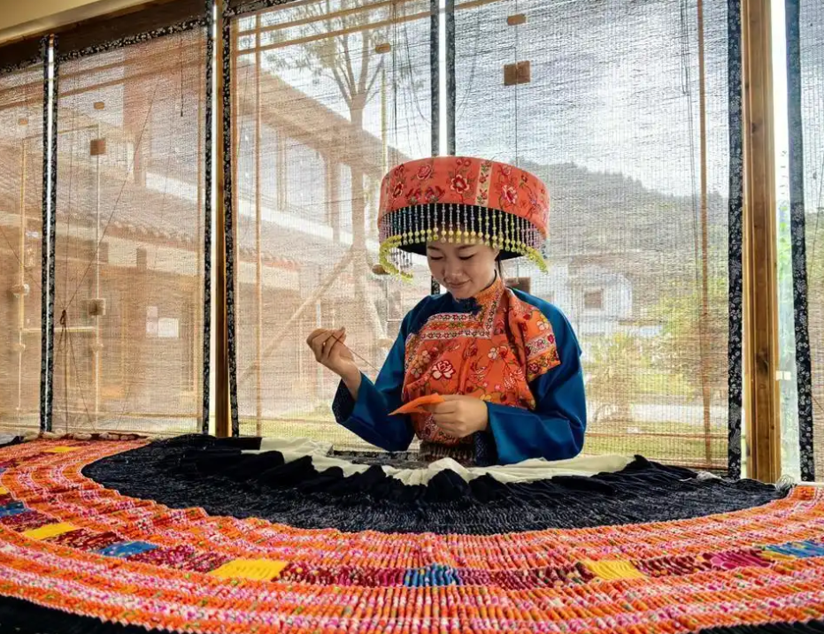
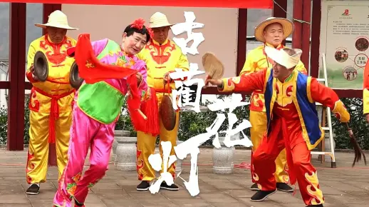
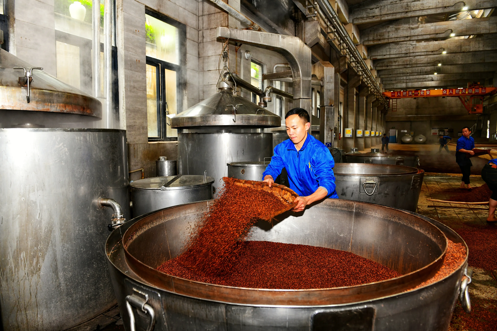
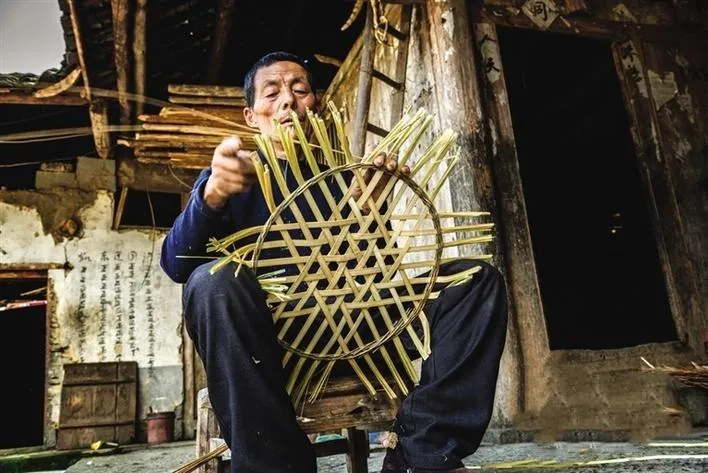
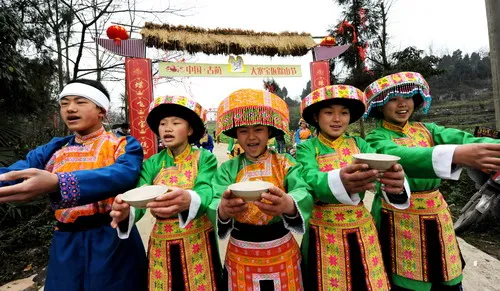

苗族刺绣
古蔺苗族刺绣以其独特的图案和色彩闻名，纹样多取材于自然，具有强烈的民族特色和艺术价值。

古蔺花灯
古蔺花灯是川南地区传统民间舞蹈，集音乐、舞蹈、戏剧于一体，具有浓郁的地方特色和民俗风情。

郎酒酿造技艺
郎酒酿造技艺传承百年，以赤水河流域优质原料和独特工艺酿造，被誉为“酱香典范”。

古蔺竹编
古蔺竹编以本地慈竹为原料，通过选竹、破竹、编织等工序，制成实用与美观兼具的竹制品。

苗族花山节
苗族花山节是古蔺苗族同胞的传统节日，通过跳芦笙、对山歌等活动，展现苗族文化魅力。
古蔺龙舟赛
古蔺龙舟赛历史悠久，每逢端午佳节，赤水河上龙舟竞渡，场面壮观，传承爱国精神。